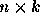

A software development firm is willing to hire new programmers and to spend
more money for hardware and software systems in order to increase productivity
in its programming divisions. For lack of a better idea, management has
defined increased productivity for a division as ``incremental lines
of code" that the division produces. The company needs a resource allocation
model to determine how the money and new programmers should be divided
among the divisions in order to maximize the total productivity increase.
Each programming division is limited in how effectively it can utilize any
new resources. For example, one particular division will be able to use
0, 3, 5, or 6 new programmers effectively. (The personnel organization within
that division prevents it
from being able to use 1, 2, 4, 7 or more new programmers.) This gives 4
options for allocating new programmers to that division. There are only 3
different options for allocation of additional money to that division.
Therefore, there are 12 possible allocation scenarios in this
example. For each scenario, the company has estimated the incremental lines
of code that would be produced by that division.
You must write a program that recommends a precise allocation of resources
among the divisions. For each division, your program must determine how many
new programmers and how much money should be allocated. Allocation of new
programmers and money must be made to maximize the total productivity
increase - the sum of incremental lines of code over all divisions. The total
number of programmers allocated cannot exceed the total number of programmers
that the company is willing to hire. The total amount of money cannot exceed
the total amount budgeted for the entire company. In the case where there
are multiple optimal solutions, your program may recommend any one of them.
Input for your program consists of several allocation problems. All input
data are non-negative integers. The first 3 lines of input for each
problem consists of:
d number of programming divisions ( except when d is
the end-of-file sentinel)
p total number of new programmers
b total amount of money budgeted for new computing resources
Following those 3 lines are input records for each programming division.
The first record is for division #1, the second for division #2, etc.
Each division record is organized as follows:
n number of new programmer options ( )
list of new programmer options (numbers are separated by blanks)
k number of new budget options ( )
cost of each new budget option (separated by blanks)
 table of integers the (i, j) table entry is the incremental lines of code
produced for allocation of  new programmers and
new programmers and
additional budget
It is possible to allocate 0 new programmers to any division and $0 for new
hardware and software - resulting in no increase in productivity for that
division. This ``null" allocation will be explicitly shown.
Each allocation problem begins on a new line. The end of input is signified
by an allocation ``problem" with 0 divisions. No input lines follow that
line.
Output for each problem begins with a line identifying the problem that is
solved (problem #1, problem #2, etc.). This is followed by a blank line
then 3 lines that tell the total amount of money to be spent, the total
number of new programmer to be
hired, and the total anticipated new productivity for an optimal resource
allocation.
Output for each division comes next. The first line identifies the division
by number. The remaining 3 lines indicate the division's budget, the
number of new programmers for the division, and the expected incremental lines
of code to be produced. One blank line appears between output for successive
divisions. Two blank lines appear between output for successive problems.
The exact formatting of the output is not critical, but all output must be
easy to read and well-identified.
Note:
A sample input file which contains one complete allocation problem is shown
below. In this problem, there are 3 programming divisions. The company is
willing to hire up to 10 new programmers and spend up to $90,000 on new
computing resources. For division #1, the expenditure of $50,000
on new computing resources and allocation of 6 new programmers would
result in the production of 40,000 incremental lines of code.
3
10
90000
4
0 2 5 6
4
0 20000 50000 70000
0 10000 20000 50000
60000 20000 10000 40000
20000 10000 30000 40000
30000 10000 40000 30000
5
0 1 3 4 8
3
0 40000 80000
0 50000 30000
50000 40000 60000
20000 30000 50000
80000 90000 50000
30000 40000 70000
3
0 4 6
5
0 50000 30000 40000 50000
0 30000 50000 60000 30000
10000 20000 30000 40000 50000
20000 30000 40000 50000 60000
0
Optimal resource allocation problem #1
Total budget: $80000
Total new programmers: 6
Total productivity increase: 210000
Division #1 resource allocation:
Budget: $0
Programmers: 2
Incremental lines of code: 60000
Division #2 resource allocation:
Budget: $40000
Programmers: 4
Incremental lines of code: 90000
Division #3 resource allocation:
Budget: $40000
Programmers: 0
Incremental lines of code: 60000